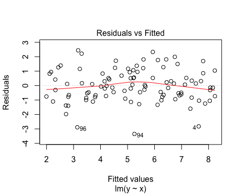
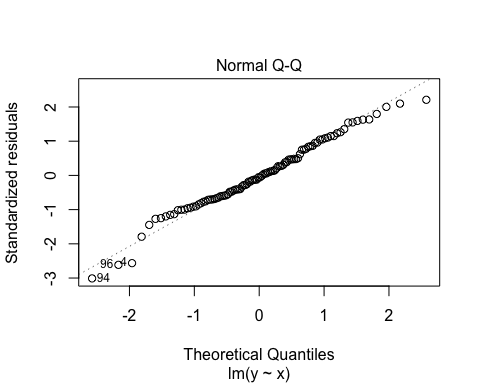
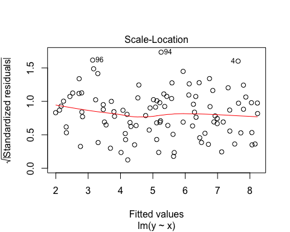
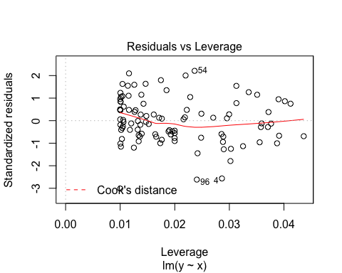
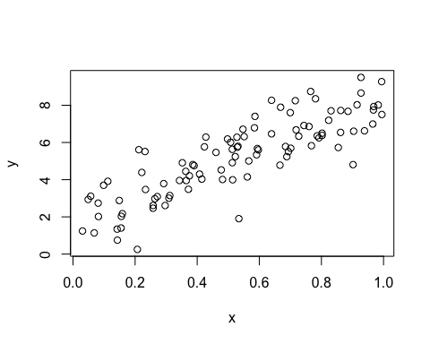
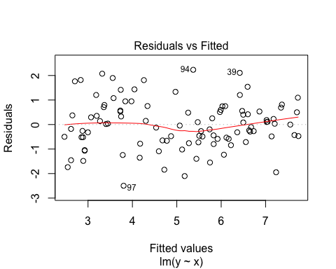
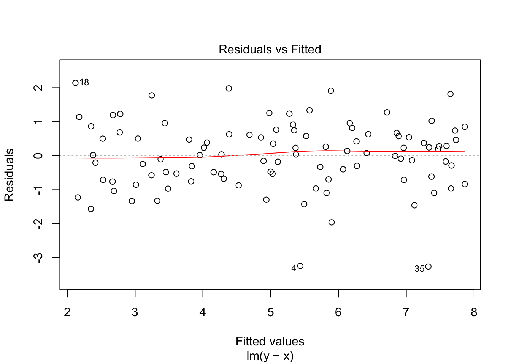

1 Preface
I started this online book as background material for the course Network Analysis and from the need to teach social science students (including Business Administration and econmonics students) the very basics of R and the intuition behing applying linear regression. I intend to work on this book on the fly meaning that during courses I try to see what the needs of students really are. Moreover, during the year I intend to add additional chapters, specifically about the use of stated preference modeling–and its corresponding logit estimation–and working with geographical data. Obviously, all in R. At the moment this book really has not yet passed its infant stage. Therefore, all input in the form of comments, critique and remarks are high appreciated.
2 Introduction
2.1 Why do we need all this?
A natural question that arises, or at least should arise, is why bother? Why learn students in the social sciences new tools to do research. ‘Old’ tools1 such as Word, Excel and Statado just as fine right? I would say yes, but up to a certain extent. If you are only interested in straightforward regression and anova techniques and collect your sample by survey research, then Stata and Excel(or even SPSS, the horror…) would definitely suffice. But if you would like to do more fancy and cool stuff, including creating beautiful diagrams, nice maps, simulation, network analysis, and even whole books in html then you need more elaborate tools.
And even though most of the best tools out there2 are open source (so they are free, as in free beer) they will cost you something dearly: namely, your time. The learning curve of these tools are usually quite steep (which also means they will pay-off quickly). So, choose your battles carefully. The best tools, I would argue, have the following set of characteristics:
- They are open source. So no lock-in effects anymore with datasets (
Stata) or versions (Word). - They are scriptable. This means they can “communicate” with other programs. Usually this means that these tools revolve around
.txtfiles. - There is a large community that uses these tools. This is very handy for supplementary material and solving questions.
- They are multi-purpose, which means you can use them for various purposes. This is actually only a requirement of the data management/statistics you use.
One of the tools that meets all these requirements, and more, is R and the next section lays out why even social scientists should learn R.
2.2 Why use R and not other applications?
Ask any data scientist at the moment for the software tools most used and they will most likely answer R or Python. Of course, that should not be a valid answer (many people use Word as well and nobody would argue that Word is brilliant), but it indicates the popularity (and the community) that uses R.
Where 10 years ago most social scientists still used SPSS (and the economists Stata), that has now changed completely (well the economists still use Stata but the rest of the world moved on). And for good reasons, namely:
- It is open source and thus free;
Ris flexible and thus multi-purpose;- there is now a very large userbase; everything you can dream of (well sort of), somebody else most likely already programmed;3
- it generates beautiful pictures, diagram, maps, and histograms (even pie diagrams);
- relative to
StataorExcelit is fast, which is great for larger (spatial) databases.
In general, you can use R for statistical analysis, simulation analysis, data management, visual display of data, creating documents (and presentations), and even GIS applications. In that respect it is far more flexible than Stata. Last but perhaps not least, R is more and more used outside academia as well. Twitter, Facebook and Google use R, but companies as the NY times as well for interactive website diagrams.
2.3 Regression analysis: not again!
I will also spend some time on the use of regression analysis and try to explain in my own words how to use it. In general, my experience is that many students have little or no experience in regression analysis. Moreover, and perhaps even worse, they have little or no intuition for regression analysis. This sort of sucks, the more because regression is the most often statistical technique used in the social sciences (heck, in all sciences).
In my perception, students are taught the principles of statistics (typically this involves lots of things as ANOVA), where in the last course, one or two hours is spent on regression analysis. This is fine, as long as it comes back in a course as applied statistics or econometrics (how and when to do this stuff?) or in other applied courses. But usually this is not the case. Most courses don’t care about regression analysis and the first moment you have to use it again is when writing your thesis and at that time it is a bit too late to teach the applied stuff again.
So, yeah, therefore a bit of regression analysis from my perspective. But again, you only learn this by doing and under the guidance of various teachers (and in various cirumstances).
3 Basic R Usage
library("swirl")
library("rio")
library("ggplot2")The R programming language and software environment for statistical computing is an implementation of the proprietary S programming language by Ross Ithaka and Robert Gentleman in 1992. It quickly gained in popularity (see, e.g, this Nature article from 2014 Programming tools: Adventures with R) and now has more than 8,000 user contributed packages (see as well the blog piece On the growth of CRAN packages).
3.1 Where to get it
First, you need to install R itself. You can do this by downloading this from CRAN (we choose here the server from the Netherlands). Choose your appropriate operating system, choose the base system, download R and install it. That’s it!
The base distribution of R comes with a built-in editor, where you can write your script (more about scripts in subsection @ref(subsec:scripts)). This editor is however very basic. Therefore, it is very much advised that you download and install the Open Source editor RStudio as well. Again, choose your operating system and just install the latest version. The very short video (1.5 minutes) on RStudio’s website gives an overview of the basic features (it can do quite some more stuff).
3.2 For absolute beginners
At the moment there are many tutorials, blogs, youtube clips, and background materials about using R on the internet. I therefore do not intend to write a complete handbook, but focus instead on what I need for my courses. Moreover, I do not intend to teach the very basic stuff. There is very good tutorial package out there called Swirl (see as well the website: http://swirlstats.com/students.html). I very much recommend using this package for absolute beginners. The way to do this is rather simple. First install the package by typing:
install.packages("swirl")then start Swirl by first loading the package:
library("swirl")And then call the function by typing:
swirl()In the first menu choose R Programming. Now, there are 15 lessons. I find the first four the most useful (Basic Building Block, Workspace and Files, Sequences of Numbers, Vectors), but others are very useful as well to go through. The command main() by the way brings you always back to the main menu, and do not go for the credits on coursera (that is now a paid online course).
3.3 How to use it
R is truly a programming language in the sense that there is no graphical user interface (GUI) involved. You need to type your own commands. And for beginners this sort of sucks. It seems slower, you have no idea which commands to type in, and you frequently make many mistakes. However, when you start to use it more, speed of getting things done goes up (sometimes exponentially), you have a better grasp on the basic commands, and the number of mistakes go down. In contrast with programs such as Excel or SPSS, there are two big differences: (i) you use scripts and (ii) you make frequently use of packages which are essentially written by other R users.
3.3.1 Scripts
The use of scripts or program files is somewhat alien to most. Although Stata also makes use of so-called do files. You start a new script by clicking on File > New Script (R editor) or File > New File > New Script (RStudio). You now have a new empty file (which you have to save from time to time). If you fill in this file with commands, you are actually programming. The huge benefit of this procedure is that you record what you have done and that you can easily change something.
As an example, assume that somebody gives you a dataset with 2 variables and ask you to analyse this dataset. With SPSS you read this dataset in and then click on various butttons so you get some output. Now, assume further that this person actually has forgotten a variable (this happens more often than you think) and gives you a new dataset with 3 variables. Then you have to do all the clicking again (and hopefully you remembered on which buttons you actually clicked).
When you have a script file you only have to change the code in 1 or 2 places and run it all again. No sweat! So, writing up all the commmands and save it for later, might cost you some time in the beginning, but there are huge time savers later on! To run a script you simply need to press the button Edit > Run all (R editor) or Code > Run Region > Run All (RStudio). Nobody does that however, because there are numerous Keyboard Shortcuts (I advise you to learn them, because they make you considerably faster. Actually, most Keyboard Shortcuts work in a wide variety of editors–even in Word.)
3.3.2 Help!
Sometimes you have found a command you would think you could use, but you do not know how, then you need to use ? operator in front of the command. For instance, you know that the command c() could be useful, but how? Then type:
?c()And the appropiate documentation will pop up.
3.3.3 Packages
R (as many other software applications nowadays) depends heavily on packages written by other parties, usually users of R. There are now many packages out there. You can find the ‘official’ ones on the CRAN website, but there are many more. Packages have to be installed (both R editor and RStudio have a separate package manager) and afterwards loaded. Say, for instance we want to use the awesome ggplot2 package (a package to make plots look nice, actually to make more elaborate plots but anyway), then to install and load the package we give the commands:
install.packages("ggplot2")
library("ggplot2")Now, we can use the commands from this package as if they were built-in.
Gradually, we come across some useful packages. Those we will use in a chapter will always be listed at the start of the chapter.
3.3.4 Using comments
A final word in this section about the use of comments. Do it!. Really, it will make your future life much easier if you have documented what you have done. You can insert comments by using the # operator (everything after the hashtag is a comment), so, e.g.,
2+2 # always wanted to know about the outcome, but were afraid to ask3.4 Reading and writing data
To properly do statistics one needs data (duh!). Luckily, there are numerous ways to get data in R.
When you just have a csv text file (comma separated file), it is easy, you just type:
df <- read.csv(file="my_data.csv", header = TRUE)and you read in the data.csv in a data frame variable called df. Note that the original header variables are preserved. If you would like to store your data you can do the reverse, namely:
write.csv(df, file = "my_data.csv")Now sometimes you do not have nicely formatted .csv or .txtfiles, but nasty .dta files from Stata or .xlsx files from Excel. Here the package Rio comes very handed, being the swiss-army knife of data converters in R. Assume you have the mtcars dataset in various formats, then you can do
library("rio")
x <- import("mtcars.sav") # SPSS data file
y <- import("mtcars.xlsx") # Excel data file
z <- import("mtcars.dta") # Stata data fileand all dataframes x, y z should be identical.
3.5 Ehmmm, dataframes
I already talked a bit about dataframes, but have not yet explained what they are. Simply, it is your data. Lets construct a simple dataframe:
Names <- c("Thomas", "Erik", "Mark", "Eveline")
Grades <- c(5, 8, 6.5, 7)
Female <- c(FALSE,FALSE,FALSE,TRUE)
df_grades <- data.frame(Names, Grades, Female) First,note a couple of things. A dataframe can consists of various data_types, in this case strings (the names), numbers (the grades) and so-called Booleans (someone is female or not). Secondly, we have names the variables. So, we now have a dataframe called df_grades. Great, now what? Well, we can do a couple of things. By using the command head() we can show the first 6 rows of this dataframe.
head(df_grades)## Names Grades Female
## 1 Thomas 5.0 FALSE
## 2 Erik 8.0 FALSE
## 3 Mark 6.5 FALSE
## 4 Eveline 7.0 TRUEBecause we only have four observations this actually gives our whole dataframe (you can also just type df_grades to get this). Using square brackets [] allows you get specific information from this dataset, where the first index denotes the row and the second index denotes the column. Look at the following examples:
df_grades[1,2]## [1] 5df_grades[1,]## Names Grades Female
## 1 Thomas 5 FALSEdf_grades[3]## Female
## 1 FALSE
## 2 FALSE
## 3 FALSE
## 4 TRUEdf_grades["Names"]## Names
## 1 Thomas
## 2 Erik
## 3 Mark
## 4 EvelineMost of the statistical stuff we will do invokes the use of dataframe and specific variables from that dataframe.
3.6 Regression modeling
Before we start laying-out how to do regression modeling in R, we first need data. And for this purpose we will simulate our data by the following commands:
x <- runif(100, min = 0, max = 1) # create 100 uniformly distributed numbers in interval (0,1)
y <- 2 + 6*x + rnorm(100, mean = 0, sd = 1) # rnorm stands for the normal distribution
df <- data.frame(y,x) # Strictly not necessary but for the sake of the expositionSo in fact we have now created the following model:
\[ y_i = 2 + 6 x_i + \epsilon_i, \] where \(\epsilon_i\) is standard normally distributed (as I will explain later in Section @ref(sec:theory) this is for convenience but not absolutely needed to do linear regression).
checking this with
head(df)## y x
## 1 3.835505 0.2435226
## 2 3.750405 0.4186126
## 3 7.330236 0.6993083
## 4 5.152201 0.5243399
## 5 5.296860 0.3917182
## 6 7.165345 0.8207766indeed shows the first 6 combination of \(x\) and \(y\). If we now perform a linear regression, then we expect that the estimated intercept should be very close to 2 and the estimated slope parameter should be very close to 6. In R we have the command lm() (from linear model) to do this as follows:
linear_model <- lm(y~x, data = df)We now have performed a regression of \(y\) onto \(x\), using the data df and save the result in a variable called linear_model. First note the first part of the lm(,) expression. y~x means that y is the left-hand side variable and x the righ-hand side variable (if we have more variables, the formula becomes something asy~x+u+v+w+z). The second part of the lm(,) expression denotes the specific dataframe to be used. Namely, in R you can have multiple dataframes so you have to specify which one is to be used.
Right, but now what? Well, we have now a variable called linear_model, just typing in linear_model only gets you the real basic results:
linear_model##
## Call:
## lm(formula = y ~ x, data = df)
##
## Coefficients:
## (Intercept) x
## 1.984 6.210But, you want more, right? Standard errors, t-statistics, R-squares, the whole lot. For this, you need the summary() command, which gives you the following outcome
summary(linear_model)##
## Call:
## lm(formula = y ~ x, data = df)
##
## Residuals:
## Min 1Q Median 3Q Max
## -3.4490 -0.5008 0.0622 0.6421 1.7899
##
## Coefficients:
## Estimate Std. Error t value Pr(>|t|)
## (Intercept) 1.9842 0.1614 12.29 <2e-16 ***
## x 6.2097 0.3092 20.08 <2e-16 ***
## ---
## Signif. codes: 0 '***' 0.001 '**' 0.01 '*' 0.05 '.' 0.1 ' ' 1
##
## Residual standard error: 0.9421 on 98 degrees of freedom
## Multiple R-squared: 0.8045, Adjusted R-squared: 0.8025
## F-statistic: 403.2 on 1 and 98 DF, p-value: < 2.2e-16Interestingly, our parameters are close to 2 and 6, but not that close (which happens with a limited amount of observations, notice as well the relatively large standard errors). So, the command summary() gives all the needed statistical output, but what about regression diagnostics. For this you can ask for a plot of the variable linear_model
plot(linear_model)
And that is basically it, at least for the basics. There is much more to say about the lm() command, but that is for later.
3.7 Making plots
Where R truly shines is in making plots, diagrams, histograms, etcetera. The first thing with data you want to do is to make a scatterplot. With our \(x\) and \(y\) data this can be easily done by:
plot(x,y)
If you would like to create a histogram, just use hist() as
hist(y)However, to go one step further you also make a plot of a dataframe. for our df dataframe this is not very insightful, but let’s add another variable \(z\) uncorrelated with \(x\) and \(y\) and then plot the dataframe (the $ indicate that z is a variable in dataframe df).
df$z <- runif(100, 0,1)
plot(df)
And luckily, this plot confirms what we expect. \(x\) are correlated \(y\) by construction and \(z\) is not correlated with either \(x\) and \(y\). These are all the so-called baseline plots. They are great (and already highly customizable), but lately there has been a new kid on the block called ggplot2. It goes to far to explain the details of ggplot2 (gg here stands for the grammar of graphics), but suffice to say that ggplot2 works with building blocks, so that every piece of the figure that you want (or can think of) can be constructed. Just as an example, let’s redo our scatterplot but now using ggplot2 and say we want to add some density lines from our observations (just because we can). This can be done in the following way
ggplot(df, aes(x,y))+geom_point() + geom_density2d()
3.8 Recap
For the absolute beginner R is huge and daunting. You need to learn by taking small steps and by practicing (a lot). Do not aim immediately at big and complex projects but start small and at the basics. You will then learn that you quickly make progress and at a certain time even become efficienter than when using mousing driven tools (clicking) as Excel or SPSS. In later chapters I dive in to some more detailed topics, and hopefully the material provides you with a background solid enough to understand and work with those topics using R.
4 Digression: Linear Regression and how to apply it
library("stargazer")In the social sciences (in fact, in all sciences) linear regressions (also called OLS or ordinary least squares) or one of its relatives is the most used empirical research tool there is. Why? It is relatively simple, computationally fast, easy to interpret and relies on a relatively weak set of assumptions. Unfortunately, the assumptions needed to be able to apply linear regression, are often not well understood: both in the social sciences and beyond. Moreover, students in the social sciences typically get little guidance in how to apply linear regression in practice and how to interpret the results. Note that this does not have anything to do with the specific software students use, but more with that fact that regression techniques in a wide number of situations (courses) are just not given (apart from statistical or research methods courses). However, given the fact that data becomes increasingly more available, knowing when to use regression techniques, how to apply them and especially how to interpret and assess them is now becoming an issue of paramount importance. Or, perhaps more compelling, you need them to write your thesis.
In this chapter, I will first focus in section @ref(sec:theory) on the essential theory behind regression analysis. I really keep it to the bare minimum. But if you understand these basics, I would argue that you understand more than 75% of the theorical background (the rest if just nitty-gritty). Section @ref(sec:applications) will focus on applications of linear regression, specification issues (how many variables) and how to interpret the results.
4.1 Theoretical background
This subsection first deals with the model (what are you trying to explain), then about the three critical assumptions of (ordinary) least squares, discusses subsequently typical situations when these assumptions are violated, and finishes with a discussion about less important stuff (on which, alas, quite some attention is given in bachelor courses).
Before we start, I would like to make one important remark. In general, statistical models can be used for (i) finding statistical relations, finding (ii) causal relations and for (iii) predicting. All three uses require the same assumptions, but have different focuses. In statistics, generally the focus is on finding statistical relations, such as whether the Dutch population is on average taller then the German population. In economics the focus is very much on finding causal relations, so the need for explanatory power is not very large. Models that do not explain much (where the \(R^2\)’s are low, say \(<\) 0.2) are just as good as models that explain quite a lot, as long as the least squares assumptions hold. In transportation science in general (and other disciplines that deals with making large models) predictions and thus eplanatory power is key. Here it is now very important that you perfectly understand what causes what as long as out-of-sample predicting is good (say for predicting future commuting flows).
I usually have finding causal relations in mind when talking about least squares (already difficult enough), but note again that the same least squares assumptions should hold when you want to predict or want to find statistical relations.
4.1.1 The model
Assume we are interested in the effect of the weight of a car on the fuel efficiency of the car (measures in miles per gallon). We state the following univariate regression model: \[ y_i = \alpha + \beta x_i + \epsilon_i, \] where \(y\) denotes the fuel efficiency of the car, \(x\) denotes the weight of the car and subscript \(i\) stands for the \(i\)-th observation. \(\alpha\) and \(\beta\) are the parameters of the model and they are unknown so have to be estimated. \(\epsilon\) is a so-called error term and denotes all the variation that is not captures by our two variables (\(\alpha\) and \(\beta\)) and our weight variable \(x\).
The following observations are rather important:
- What is on the left hand side of the \(=\) sign is what is to be explained (in this case miles per gallon). What is on the right hand side is what we use to explain \(y\). In this case \(x\), the weight of the car.
- The parameters \(\alpha\) en \(\beta\) constitute a linear relation between \(x\) and \(y\)
- The parameter \(\alpha\) is the constant and in the univariate setting denotes where the linear relation crosses the \(y\)-axis.
- \(\beta\) gives the impact of \(x\) on \(y\). Because it is a linear relation, the effect is simple. One unit change of \(x\) is associated with a \(\beta\) change of \(y\). In general, we can say that \(\beta\) is equal to the marginal effect (\(\frac{\partial y}{\partial x}\)). Moreover, in a univariate setting \(\beta\) denotes the slope of the relation between \(x\) and \(y\).
- The regression error term \(\epsilon\) gives all variation that is not captured by our model, so \(y_i -(\alpha + \beta x_i) = \epsilon_i\). In this case, weight of the car most likely does not capture all variation in miles per gallon, so quite some variation is left in \(\epsilon\). Something else is captured as well by \(\epsilon\) and that is the measurement error of \(y\). So, if we have not measured miles per gallon precisely enough then that variation is captured as well by \(\epsilon\).
Now, let’s assume that we want to incorporate another variable (say the number of cylinders \(c\)), because we think that that variable is very important in explaining miles per gallon. Then we get the following multivariate regression model: \[ y_i = \alpha + \beta_1 x_i + \beta_2 c_i + \epsilon_i, \] where we now have two variables on the right hand side (\(x_i\) and \(c_i\)) and three parameters (\(\alpha\), \(\beta_1\) and \(\beta_2\)). In effect nothing changes with the intuition behind the model. Except for the interpretation of the parameter \(\beta_1\) (and thus also \(\beta_2\)). Parameter \(\beta_1\) now measures the impact of \(x\) on \(y\) holding \(c\) constant. So, multivariate regression models is nothing more (and less) than controlling for other factors. And we see later why that is very important.
4.1.2 The least squares assumptions
We are interested in the effect of the weight of the car on fuel efficiency and,therefore, our estimate of \(\beta_1\) should be very close to the true \(\beta_1\), especially when we have a large number of observations. Regression is great and utterly brilliant in finding this estimate, as long as the following three least squares assumptions hold:
- There are no large outliers
- All left hand side (in this case \(y\)) and right side variables (in this case \(x\) and \(c\)) are i.i.d.
- For the error term the following must hold: \(E[\epsilon|X=x] = 0\).
The first one is easy to understand. OLS is very sensitive to large outliers in the dataset. It is therefore always good to look for outliers and think whether they are real observations or perhaps typo’s (in Excel or something). Do not throw outliers immediately away but check whether they are correct.
The second is relatively easy to understand as well (but not that much in practice). i.i.d. in this case stands for independently and identically distributed. This basically means that the observations in your dataset are independent from each other: in other words, the observations should have been correctly sampled.
The third looks the most horrible, and, to be quite honest, is so–both in theory as in reality. This is also the assumption that is least well understood. And especially in assessing whether regression output is correct (is your estimate really close to \(\beta_1\)) this assumption is crucial.
4.1.3 Possible violations and how to spot them
A violation of the first assumption is usually easy to spot. There is a very strange outlier. But this also marks the importance of analysing descriptive statistics, including means, maximums and minimums, scatterplots and histograms.
Whether your data is not i.i.d. can come because of a couple of reasons. The most straightforward is getting your data via snowballing (asking your friends and families using facebook to fill in a questionnaire and to ask their friends and families to do so as well). Usually, this means that you have a very specific sample and that the estimate you get is not close to the true value for the whole population. Observations might also be dependent upon each other, because of unobserved factors. In our case, it might be that a type of cars (American) are less fuel efficient than other cars (European).
Another typical violation of the i.i.d. assumption is in time-series, where what happened in the previous period might have a large effect on the current period.
In general, however, violations of the i.i.d. property are not that devestating for your model as long as you are only interested in finding the true \(\beta_1\): namely, it usually only affects the precision of your estimate (the standard error) and not the estimate itself. When this assumption is violated, we therefore say that the estimate is inefficient. When you want to predict however, this assumption is crucial, as you would like your estimate to be as precise as possible.
When the third assumption is violated, we say that our estimate is biased, in other words wrong: our parameter estimate does not come close to the true parameter. And this happens more often than not. So, what does \(E[\epsilon|X=x] = 0\) actually mean. Loosely speaking, the parameters on the right hand side (in our case \(x\) and \(c\)) and the error term (\(\epsilon\)) are not allowed to be correlated. There are several ways that this might happen, from which the following are in our case the most relevant:
Reverse causality: \(x\) impacts \(y\), but \(y\) might impact \(x\) as well. This is the classical chicken and egg problem. Do firm perform better because of good management, or do good managers go to the better performing firms?
Unobserved heterogeneity bias: there are factors that are not in the model but influence both \(x\) and \(y\). For example, if american cars have both an influence on fuel efficiency and weight of the cars then the estimate that we find is not close to the true value of \(\beta_1\).
Misspecification: we assume that our model is linear, but it actually is not. Then, again, our estimate that we find is not close to the true value of \(\beta_1\).
There are other sources of violations, but in this case, these are the most important ones. Reverse causality is usually hard to correct for, but unobserved heterogeneity bias is luckily easier. Namely, we add relevant control variables (as we did with \(c\)). In this case we can minimize possible unobserved heterogeity bias. Misspefications are in general as well relative easy to correct for. From our descriptive statistics and scatterplot we usually can infer the relation between \(x\) and \(y\) and control for possible nonlinearities by using (natural) logarithms and squared terms.
As a sidenote, natural logarithms are the ones most used for various reasons not discussed here. If we take the logarithm of both sides then for our univariate regression we get: \[ \ln(y_i) = \alpha + \beta \ln(x_i) + \epsilon_i, \] and all the aforementioned rules and assumptions still apply. But there is something peculiar to this regression. Namely, if we are interested in the marginal effect (\(\frac{\partial y}{\partial x}\)), we get the following: \[ \frac{\partial y}{\partial x} = \frac{\partial e^{\ln(y_t)}}{\partial x} = \frac{\partial e^{(\alpha + \beta \ln(x_i) + \epsilon_i)}}{\partial x} = \frac{\beta}{x}e^{(\alpha + \beta \ln(x_i) + \epsilon_i)} = \frac{\beta}{x}y, \] In other words: \[ \beta = \frac{\partial y}{\partial x} \frac{x}{y} \] which is simply the elasticity between \(x\) and \(y\). So, if there are logarithms on both the left and right hand side then the parameters (the \(\beta\)’s) denotes elasticities.
4.1.4 Normality, heteroskedasticity and multicollinearity
Until now, we have not discussed the concepts normality, heteroskedasticity and multicollinearity. That is simply because they are not that relevant (as long as we have enough observations, typically above 40). The validity of OLS hinges just upon the three assumptions mentioned above (and they are already difficult enough). In fact, if the three assumptions are satisfied, then, as an outcome, the parameters (\(\beta\)) are normally distributed. It goes to far to explain why (the theorems required for this are deeply fundamental to statistics), but in any case, normality is not a core OLS assumption. It would be nice if both \(y\) and \(x\) are normally distributed because then the standard errors are minimized, but again, whether the estimate of \(\beta\) you find is correct or not (biased or unbiased) does not depend on normality assumptions.
Heteroskedasticy (in other words your standard errors are not constant) as well leads to quite some confusion. In general heteroskedasticity only leads to inefficient estimates (so only affects the standard errors). Nothing more, nothing less. And there are corrections for that (robust standard errors in Stata and similar procedures in R), so that nobody needs to care anymore about heteroskedasticity.
Finally, there is multicollinearity. And this come in two flavours: perfect and imperfect multicollinearity. Perfect multicollinearity occurs, e.g., when your model contains two identical variables. Then, OLS can not decide which one to use and usually one of the variables is dropped, or your computer program gives an error (computer says no).
Imperfect multicollinearity occurs when two variables are highly (but not perfectly) correlated. This occurs less often than one may think. Variables that are highly correlated (say \(age\) and \(age^2\)) can be perfectly incorporated in a model. Only when the correlation becomes very high (say above 95% or even higher) then something strange happens: the standard errors get very large. Why? That is because of the definition mentioned above. Parameter \(\beta_1\) measures the impact of \(x\) on \(y\) holding \(c\) constant. But if \(x\) and \(c\) are very highly correlated and you control for \(c\), then not much variation is left over for \(x\). So, \(c\) actually removes the variation within the variable \(x\). This always happens, and there is a trade-off between adding more variables and leaving enough variation (note that there is always correlation between variables), but usually it all goes fine. Good judgement and sound thinking typically helps more than strange statistics (say VIF?).
4.2 Applications of linear regression
This section gives an application of regression analysis. Assume we are still interested in the effect of the weight of a car on the fuel efficiency of the car (measures in miles per gallon). We have found a dataset (internal in R), so the first thing we have to do is look at the descriptives of the dataset.
4.2.1 Descriptives
The build-in dataset mtcars has, besides several other variables, information on weight of a car in (1000 lbs or in about 450 kilos) and miles per gallon. With the following command head() we can look at the first 6 observations.
head(mtcars)## mpg cyl disp hp drat wt qsec vs am gear carb
## Mazda RX4 21.0 6 160 110 3.90 2.620 16.46 0 1 4 4
## Mazda RX4 Wag 21.0 6 160 110 3.90 2.875 17.02 0 1 4 4
## Datsun 710 22.8 4 108 93 3.85 2.320 18.61 1 1 4 1
## Hornet 4 Drive 21.4 6 258 110 3.08 3.215 19.44 1 0 3 1
## Hornet Sportabout 18.7 8 360 175 3.15 3.440 17.02 0 0 3 2
## Valiant 18.1 6 225 105 2.76 3.460 20.22 1 0 3 1Again, we are interested in the relation weight of a car (the variable wt) and miles per gallon (the variable mpg). Note, that in his case mpg is the first column and wt is the sixth column. (The column with car names above is not a real variable, but are the row names). Recall that the command c() combines stuff, so we can look at the summary statistics of the variables we are only interested in by:
summary(mtcars[,c(1,6)])## mpg wt
## Min. :10.40 Min. :1.513
## 1st Qu.:15.43 1st Qu.:2.581
## Median :19.20 Median :3.325
## Mean :20.09 Mean :3.217
## 3rd Qu.:22.80 3rd Qu.:3.610
## Max. :33.90 Max. :5.424There does not seem to be anything out of the ordinary here, but to be sure, we construct a scatterplot between weight of the car and miles per gallon.
plot(mpg~wt, mtcars)(#fig:unnamed-chunk-27)A scatterplog between miles per gallon and car weight.
So, there do not seem to be many outliers here. Moreover, as we would expect, there seems to be a downward sloping relation between weight of the car and miles per gallon (hopefully you agree, that this makes sense). To quantify this relation, the next subsection will perform a least squares estimation.
4.2.2 Baseline model
So, if we are only interested in the relation between weight of a car (the variable wt) and miles per gallon, we can easily perform the following regression (recall again that the command lm() performs a least squares estimation and that <- denotes an assignment to a variable:
baselinemodel <- lm(mpg~wt, mtcars)
summary(baselinemodel)##
## Call:
## lm(formula = mpg ~ wt, data = mtcars)
##
## Residuals:
## Min 1Q Median 3Q Max
## -4.5432 -2.3647 -0.1252 1.4096 6.8727
##
## Coefficients:
## Estimate Std. Error t value Pr(>|t|)
## (Intercept) 37.2851 1.8776 19.858 < 2e-16 ***
## wt -5.3445 0.5591 -9.559 1.29e-10 ***
## ---
## Signif. codes: 0 '***' 0.001 '**' 0.01 '*' 0.05 '.' 0.1 ' ' 1
##
## Residual standard error: 3.046 on 30 degrees of freedom
## Multiple R-squared: 0.7528, Adjusted R-squared: 0.7446
## F-statistic: 91.38 on 1 and 30 DF, p-value: 1.294e-10At this point it is good to stop and see what we have got. We have the formula call (we know this one), some stuff about the residuals, stuff about the coefficients (most important for us), and some diagnostics (including the notorious \(R^2\)). We zoom in on the results about the coefficients. We have an estimation of the intercept (our \(\alpha\) of above) and of wt (our \(\beta\) of above). For both, we have as well a standard error, a \(t\)-value, a probability and a bunch of stars. What do they all mean again? We focus on wt here (typically we are less interested in the constant or intercept).
The estimate is easy; that is \(\beta\) or the marginal effect of \(x\) on \(y\). So, increasing \(x\) with 1 (or with a 1000 lbs) decreases the miles per gallon with 5.3445 (which is quite lot).
The standard error denote thes precision of the estimate. As a rule of thumb: you know with 95% centainty that the true value of \(\beta\) lies within the interval [estimate - 2 \(\times\) standard error, estimate + 2 \(\times\) standard error]. The standard error is very important and is used to test possible values of the parameter. One of the most important tests is whether \(\beta=0\). Why? Because, if \(\beta=0\) then the variable wt does nothing on mpg. This specific test is always denoted by the \(t\)-value, its associated probability and the corresponding star thingies. In this case, the \(t\)-value is high in an absolute sense, so it is very improbable that the estimate could be zero (somehting like a probability of 0.0000000001 which is small indeed), and the stars neatly indicate that this probability (of \(\beta=0\) is smaller than 0.001.
One nice trick is to plot the regression line in the scatterplot above. One can do so by the command abline() or:
plot(mpg~wt, mtcars)
abline(lm(mpg~wt, mtcars))(#fig:unnamed-chunk-29)A scatterplog between miles per gallon and car weight with regression line.
4.2.3 Specificion issues
I can imagine that you are not very satisfied yet with the analysis. First of all, the relation between mpg and wt might be nonlinear and, secondly, you would like to include additional variables. First we look at the possible nonlinearity in the regression relation (note that we can use the regression formula as before, but that we can specify logarithmic relations by log()):
logmodel <- lm(log(mpg)~log(wt), mtcars)
summary(logmodel)##
## Call:
## lm(formula = log(mpg) ~ log(wt), data = mtcars)
##
## Residuals:
## Min 1Q Median 3Q Max
## -0.18141 -0.10681 -0.02125 0.08109 0.26930
##
## Coefficients:
## Estimate Std. Error t value Pr(>|t|)
## (Intercept) 3.90181 0.08790 44.39 < 2e-16 ***
## log(wt) -0.84182 0.07549 -11.15 3.41e-12 ***
## ---
## Signif. codes: 0 '***' 0.001 '**' 0.01 '*' 0.05 '.' 0.1 ' ' 1
##
## Residual standard error: 0.1334 on 30 degrees of freedom
## Multiple R-squared: 0.8056, Adjusted R-squared: 0.7992
## F-statistic: 124.4 on 1 and 30 DF, p-value: 3.406e-12We have now the same type of output as before, but I would like to focus on two things here. First, the \(R^2\) has gone up and that is what you typically get in the social sciences. Logarithmically transformed variables usually fit better. Secondly, the interpretation of the estimate now differs. It has become an elasticity with size \(-0.84\), which is quite high again. If the car doubles in weights, the fuel efficiency of the car goes down by 84%!
Secondly, you might want to include other variables, such as being a foreing car (opposite to a car from USA) (vs), the number of cylinders (cyl), the gross horsepower (hp) and how quick the car does over a quarter of a mile (qsec). Again, we are not interested in these additional variables or whether they crank up the \(R^2\). The only thing we are interested is in whether the coefficient of log(wt) changes.
extendedmodel <- lm(log(mpg)~log(wt)+vs+cyl + hp + qsec, mtcars)
summary(extendedmodel)##
## Call:
## lm(formula = log(mpg) ~ log(wt) + vs + cyl + hp + qsec, data = mtcars)
##
## Residuals:
## Min 1Q Median 3Q Max
## -0.201746 -0.065242 -0.009506 0.079809 0.205166
##
## Coefficients:
## Estimate Std. Error t value Pr(>|t|)
## (Intercept) 3.5280554 0.4610947 7.651 4.04e-08 ***
## log(wt) -0.6514583 0.1509786 -4.315 0.000205 ***
## vs -0.0149215 0.0863277 -0.173 0.864111
## cyl -0.0160253 0.0314486 -0.510 0.614651
## hp -0.0007670 0.0006861 -1.118 0.273786
## qsec 0.0212017 0.0267153 0.794 0.434603
## ---
## Signif. codes: 0 '***' 0.001 '**' 0.01 '*' 0.05 '.' 0.1 ' ' 1
##
## Residual standard error: 0.1121 on 26 degrees of freedom
## Multiple R-squared: 0.8811, Adjusted R-squared: 0.8582
## F-statistic: 38.53 on 5 and 26 DF, p-value: 3.227e-11Clearly, the coefficient of log(wt) changes with the inclusion of additional variables. So there was unobserved heterogeneity bias in our baseline model (and most likely there still is in our extended model), even though the addional variables are not siginficant.
4.2.4 Reporting
Hopefully you agree that the regression output of above looks horrible and that you do not need all these statistics and stuff. Therefore, you need to construct your own table for presentation format. The minimum what should be in these tables are the coefficient names, the estimates, the standard errors (and the start would be nice as well), the \(R^2\) and the number of observations used.
Unfortunately, creating tables of your own is a pain in the … Luckily, within R (and by the way in programs as Stata as well) you can do this automatically! In R there are several packages one can use. I prefer the package Stargazer and after using this package we get the following outcome for our logarithmic specification:4
stargazer(logmodel, extendedmodel, header=FALSE, type = "html", omit.stat = c("rsq", "f"))| Dependent variable: | ||
| log(mpg) | ||
| (1) | (2) | |
| log(wt) | -0.842*** | -0.651*** |
| (0.075) | (0.151) | |
| vs | -0.015 | |
| (0.086) | ||
| cyl | -0.016 | |
| (0.031) | ||
| hp | -0.001 | |
| (0.001) | ||
| qsec | 0.021 | |
| (0.027) | ||
| Constant | 3.902*** | 3.528*** |
| (0.088) | (0.461) | |
| Observations | 32 | 32 |
| Adjusted R2 | 0.799 | 0.858 |
| Residual Std. Error | 0.133 (df = 30) | 0.112 (df = 26) |
| Note: | p<0.1; p<0.05; p<0.01 | |
Note that we now display both specifications, the first the univariate case and the second the multivariate case. This is now typically done in social science research. You start with a baseline and then add variables to check whether the variable of interest remains robust.
4.2.5 Internal validation
So, after done all modeling exercitions you are not done! Now, it is time to validate your results internally. Can you be confident of your results? Or is the parameter that you have found still suspect of possible biases. Here again come the three least squares assumptions:
No large outliers: we have checked that with our descriptive statistics and our scatterplot and it seems that assumption is met.
Both miles per gallon and car weight should be i.i.d.. We can reasonably assume that the sampling has been correctly and that this is the case.
The following condition should hold: \(E[\epsilon|X=x] = 0\). This one is dubious. Probably there is no reverse causality (difficult to image that miles per gallon would influence car weight), but most likely there are other factors that impact car weight and miles per gallon which are omitted (where is the car build, what is the car brand, etcetera.). One possible strategy here is to add additional variables until the parameter of interest remains robust (does not change anymore).
Note that the number of observations in this case is only 32, so whether our standard errors are automatically normally distributed is highly questionable, but for the sake of the exposition (and the fact that small sample statistics are very complex) we leave it just with this observation.
5 Network analysis with R
library("igraph")
library("igraphdata")5.1 Introduction
5.2 Creating networks
With the package igraph it is rather straighforward to create structures networks
graph.ring(500)## IGRAPH U--- 500 500 -- Ring graph
## + attr: name (g/c), mutual (g/l), circular (g/l)
## + edges:
## [1] 1-- 2 2-- 3 3-- 4 4-- 5 5-- 6 6-- 7 7-- 8 8-- 9 9--10 10--11
## [11] 11--12 12--13 13--14 14--15 15--16 16--17 17--18 18--19 19--20 20--21
## [21] 21--22 22--23 23--24 24--25 25--26 26--27 27--28 28--29 29--30 30--31
## [31] 31--32 32--33 33--34 34--35 35--36 36--37 37--38 38--39 39--40 40--41
## [41] 41--42 42--43 43--44 44--45 45--46 46--47 47--48 48--49 49--50 50--51
## [51] 51--52 52--53 53--54 54--55 55--56 56--57 57--58 58--59 59--60 60--61
## [61] 61--62 62--63 63--64 64--65 65--66 66--67 67--68 68--69 69--70 70--71
## [71] 71--72 72--73 73--74 74--75 75--76 76--77 77--78 78--79 79--80 80--81
## + ... omitted several edgeserdos.renyi.game(500, 0.005)
rewire(g1,each_edge(prob = 0.5))
barabasi.game(500)
5.3 Reading networks
5.4 Network characteristics
6 In conclusion
To be written
Some of the tools I use are actually quite old, even so far as from the 1970s and they are still very good.↩
Including
Markdown,LaTeX,Python,GitandGitHub.↩CRAN packages give a great overview of all the official packages out there and the wide range of applications, and again they are all free!↩
To get nice tables directly into
Word, you need something else (as you can imagine, becauseWordis not scriptable). With Stargazer shoud give the command as suchstargazer(logmodel, extendedmodel, out = "table1.txt",omit.stat = c("rsq", "f"))and there after you can read in and edit the tabletable1.txtinWord.↩